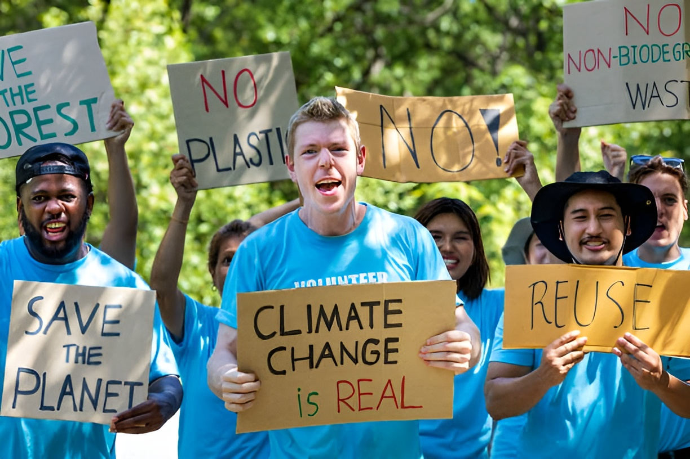

Community Grassroots Action in Detail
What is Grassroots Action?
Grassroots action refers to climate efforts that originate from within communities rather than being handed down from governments or corporations. These initiatives are driven by ordinary individuals, neighbourhood groups, faith organisations, schools, and local charities who recognise the urgency of climate change and decide to act within their own sphere of influence.
Unlike top down policy, grassroots movements are flexible, personal, and deeply connected to the needs of local people. They can take many forms from community gardens and repair cafés to organised marches, local clean up drives, or neighbourhood energy co-operatives. What unites them is a shared belief that collective local action creates meaningful systemic change.

Fig 1. Grassroots climate action begins with individuals coming together in their own neighbourhoods and communities.
Key Insight
The word "grassroots" refers to action that grows from the ground up, such as grass spreading organically through people, relationships, and shared values rather than through institutional power.
Why It Matters
Governments and multinational organisations play an essential role in combating climate change through international agreements such as the Paris Accord and national legislation. However, policy alone is not enough. Grassroots action bridges the gap between ambitious targets and lived reality, turning commitments into tangible change on the ground.
Why Grassroots Action is Essential
- Speed and Agility: Community groups can respond faster to local environmental problems than governments, which are constrained by slow legislative processes.
- Cultural Relevance: Local activists understand their communities' values, languages, and traditions, enabling more effective and inclusive engagement.
- Accountability: Grassroots organisations hold local governments and businesses to account by raising public awareness and applying community pressure.
- Empowerment: Participation in local action builds confidence, skills, and agency particularly among young people, women, and marginalised groups.
- Scalability: Successful local models can spread to other communities, scaling impact without requiring top down mandates.
Key Facts
Research by the Climate Emergency Fund found that grassroots climate organisations are among the most cost effective ways to generate public pressure for systemic climate policy change, often achieving outsized results with limited budgets.
Real-World Examples
Around the world, grassroots movements have demonstrated that community action is not just symbolic and it drives measurable environmental outcomes. From small villages to major cities, people are taking ownership of the climate challenge in imaginative and impactful ways.
Inspiring Global Examples
- Transition Towns (UK & Global): Founded in Totnes, England in 2006, the Transition Towns movement now spans over 50 countries, helping communities reduce carbon dependence through local food networks, energy projects, and skills sharing.
- Green Belt Movement (Kenya): Founded by Nobel Peace Prize winner Wangari Maathai, this movement mobilised rural women to plant over 51 million trees across Kenya, restoring degraded land and empowering communities.
- Repair Cafés (Netherlands & beyond): Originating in Amsterdam in 2009, Repair Cafe's now operate in over 2,500 locations worldwide, reducing waste by teaching communities to fix rather than discard broken goods.
- Fridays for Future (Global): Inspired by Greta Thunberg in 2018, this student led strike movement mobilised over 4 million people in a single day of global protest, directly pressuring governments ahead of COP25.

Fig 2. Community tree planting drives, such as those pioneered by the Green Belt Movement in Kenya, demonstrate grassroots action delivering measurable environmental restoration.
Key Facts
The Transition Towns network has facilitated hundreds of community energy schemes, local currency experiments, and food co-operatives and all without central government funding or direction.
Youth-Led Movements
Young people are among the most powerful drivers of grassroots climate action. Facing the prospect of living through the worst impacts of climate change, many students and young adults have channelled their concern into organised advocacy, creative campaigns, and community projects that demand both local and global change.
Notable Youth-Led Initiatives
- School Strikes for Climate: Inspired by Greta Thunberg's lone protest outside the Swedish parliament in 2018, the movement grew into a global force involving millions of students demanding faster governmental action.
- Zero Hour (USA): Founded by Indigenous youth activist Jamie Margolin, Zero Hour organises youth led marches and lobbying campaigns focusing on climate justice and frontline communities.
- SustainUS: A US youth delegation that sends young people to UN climate negotiations to advocate directly for ambitious action within international policy forums.
- Student Energy: A global non-profit connecting student energy groups at universities worldwide, supporting campus renewable energy projects and sustainable development careers.

Fig 3. Youth led climate marches have become a defining feature of the global grassroots movement, amplifying the voices of the generation most affected by climate change.
Why Youth Leadership Matters
Young people bring urgency, creativity, and moral clarity to the climate conversation. Studies show that youth activism measurably shifts public opinion and increases political engagement among wider communities, not just young people themselves.
Local Community Projects
Beyond high profile marches and international movements, the everyday work of grassroots climate action happens in neighbourhoods, allotments, community centres, and school halls. These smaller scale projects often have the most direct and lasting impact on people's lives and local environments.
Types of Local Climate Projects
- Community Energy Co-operatives: Groups of residents collectively invest in and manage local solar panels or wind turbines, sharing the energy generated and the profits reinvested into community funds.
- Urban Food Growing: Community allotments, rooftop gardens, and guerrilla gardening projects reduce food miles, improve urban biodiversity, and increase local food resilience.
- Neighbourhood Clean Up Campaigns: Regular litter picks and river cleans organised by local groups reduce plastic pollution, raise environmental awareness, and build community cohesion.
- Tool Libraries and Sharing Schemes: Community run tool and equipment lending libraries reduce consumption, save money, and build local networks of mutual support.
- Climate Cafés and Education Events: Informal local gatherings where people share concerns, learn about climate science, and plan collective actions in a welcoming environment.
Fig 4. Community allotments and urban growing projects reduce food miles, promote biodiversity, and strengthen local connections — all key aspects of grassroots climate resilience.
Key Facts
There are over 5,000 community energy projects operating across Europe alone, collectively generating enough clean electricity to power millions of homes. Community owned renewable energy has been shown to increase local acceptance of clean energy infrastructure by up to 80%.
How to Get Involved
Grassroots action does not require special qualifications or significant resources — it requires people who care and are willing to act. Whether you have five minutes or five hours a week, there are meaningful ways to contribute to community led climate action wherever you are.
Practical Steps to Join or Start Grassroots Action
- Find your local group: Search for existing climate action groups in your area through platforms such as Meetup, Facebook Groups, or the Transition Towns network directory. Joining an established group is the quickest way to make an impact.
- Start small at university or college: Propose a sustainability initiative to your student union, organise a campus litter pick, or establish a student run repair café. Institutions are often responsive to organised student pressure.
- Attend a climate café or community meeting: Many local groups hold regular informal events. Showing up is the first and most important step — you will quickly find others who share your concerns and want to act together.
- Use your skills: Graphic designers, writers, coders, teachers, and organisers are all vital to grassroots movements. Offer what you are good at — every skill set has a role to play.
- Amplify online: Share local climate stories, events, and campaigns on social media. Digital amplification extends the reach of grassroots action far beyond the local neighbourhood.
- Connect local to global: Link your community actions to broader campaigns such as Fridays for Future or the Global Climate Strike to demonstrate solidarity and increase collective impact.
Fig 5. Getting involved starts with showing up. Community meetings, skill sharing sessions, and local projects are all entry points into meaningful grassroots climate action.
Key Facts
Studies consistently show that social norms and peer influence are among the most powerful drivers of pro environmental behaviour. When one person in a community acts on climate, it measurably increases the likelihood of others doing the same — making every individual action a catalyst for collective change.